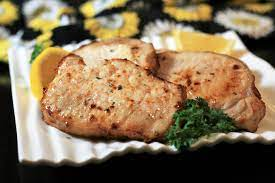

Home
Ranch Pork Chops Air Fried

In recent years air frying food has become common place. This recipe will take a common meal and add it to the great foods that can be air fried.
Ingredients
- 4 boneless. center-but pock chops, 1-inch thick
- cooking spray
- 2 teaspoons dry ranch salad dressing mix
- aluminum foil
Steps
- Place pork chops on a plate and lightly spray both slides with cooking spray. Sprinkle both sides with rach seasoning mix and let sit at room temperature for 10 minutes.
- Spray the basket of an air fryer with cooking spray and preheat the air fryer to 390 degrees F (200 degrees C).
- Place chops in the preheated air fryer, working in batches if necessary, to ensure fryer is not overcrowded.
- Cook for 5 minutes. Flip chops and cook 5 minutes more. Let rest on a foil-coverd plate for 5 minutes before serving.